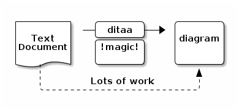
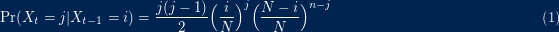
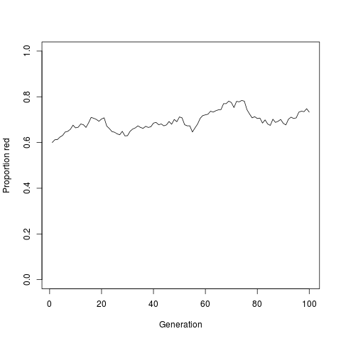
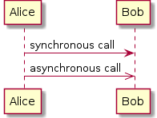
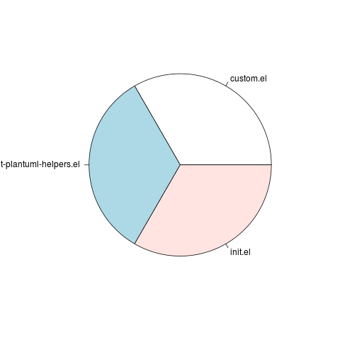

Org-mode Babel使用示例
Table of Contents
Babel介绍
简单的说Babel可以让许多不同的语言一起工作，它可以执行不同语言的代码 块，org-mode可以导出HTML样式的代码也可以将执行结果显示出来。
要想在org-mode文件里执行其他程序语言的片断，需要在 .emacs 里加入如下配置：
(org-babel-do-load-languages 'org-babel-load-languages '((emacs-lisp . t) (ruby . t) (ditaa . t) (python . t) (sh . t) (latex . t) (plantuml . t) (R . t)))
如果只是临时使用，可以在 scratch 里粘贴上面的代码，然后将光标移动
到最后一行的括号后面，然后按 C-x C-e 执行代码就可以了。上面的列表
中如果有不需要的语言，可以直接把对应的列表元素删除就行了。
插入示例文本块的基本操作
最简单插入示例文本的方法
直接在工作区输入 <e 然后按 TAB 键，系统会生成如下模板：
#+BEGIN_EXAMPLE 这里可以写一些示例内容的文本。 #+END_EXAMPLE
导出为html后的效果如下：
这里可以写一些示例内容的文本。
其实也可以直接输入 : 加空格，然后再输入示例文本：
: 直接在这里写示例内容，导出后效果和上面的一样！
如果要插入源码可以输入 <s 然后按 TAB 键，然后在模板第一行加上语言名称：
#+BEGIN_SRC emacs-lisp (defun org-xor (a b) "Exclusive or." (if a (not b) b)) #+END_SRC
如果要显示行号可以在第一行后再加上 -n -r ，如下显示：
#+BEGIN_SRC emacs-lisp -n -r
(save-excursion (ref:sc)
(goto-char (point-min)) (ref:jump)
#+END_SRC
1: (save-excursion 2: (goto-char (point-min))
上面的例子中，在第1行的位置记录了一个标识，可以在这里点击链接Line 2跳转到对应的代码行上。
In line [[(sc)]] we remember the current position. [[(jump)][Line (jump)]] jumps to point-min.
示例文本区域的样式及承载文本的容器，可以通过 #+ATTR_HTML: 来设置：
#+ATTR_HTML: :textarea t :width 40
#+BEGIN_EXAMPLE
(defun org-xor (a b)
"Exclusive or."
(if a (not b) b))
#+END_EXAMPLE
简单模板对应快捷输入的首字母
输入 < 后面跟一个字母，然后按 TAB 键，就可以生成对应的模板。（eg: <e + TAB ）
s #+BEGIN_SRC ... #+END_SRC e #+BEGIN_EXAMPLE ... #+END_EXAMPLE q #+BEGIN_QUOTE ... #+END_QUOTE v #+BEGIN_VERSE ... #+END_VERSE c #+BEGIN_CENTER ... #+END_CENTER l #+BEGIN_LaTeX ... #+END_LaTeX L #+LaTeX: h #+BEGIN_HTML ... #+END_HTML H #+HTML: a #+BEGIN_ASCII ... #+END_ASCII A #+ASCII: i #+INDEX: line I #+INCLUDE: line
参考：http://orgmode.org/manual/Easy-Templates.html#Easy-Templates
部分语言代码片断在Org-mode里的使用示例
Org-mode Babel支持的语言可以参看Bable: Languages
Ruby
在org-mode文件里的代码：
#+begin_src ruby
require 'date'
"This file was last evaluated on #{Date.today}"
#+end_src
将光标移动到上面的代码块里，按 C-c ’ 就可以在一个单独的 Buffer
中编辑代码了。如果按 C-c C-c 就可以直接将代码的执行结果插入到
org-mode文件里。
This file was last evaluated on 2014-01-02
导出到HTML里为：
require 'date' "This file was last evaluated on #{Date.today}"
如果想把代码执行的结果导出到HTML里可以使用如下代码：
#+begin_src ruby :exports results
require 'date'
"This file was last evaluated on #{Date.today}"
#+end_src
导出结果：
Ditaa
Ditaa 是用Java写的一个小（但很强大）程序，它可以将ASCII字符转换成图形。
#+begin_src ditaa :file ../img/orgmode-babel-ditaa1.png :cmdline -r +---------+ | cBLU | | | | +----+ | |cPNK| | | | +----+----+ #+end_src

#+BEGIN_SRC ditaa :file :file ../img/orgmode-babel-ditaa2.png :cmdline -r
+--------+ +-------+ +-------+
| | --+ ditaa +--> | |
| Text | +-------+ |diagram|
|Document| |!magic!| | |
| {d}| | | | |
+---+----+ +-------+ +-------+
: ^
| Lots of work |
+-------------------------+
#+END_SRC

#+BEGIN_SRC ditaa :file ../img/orgmode-babel-ditaa3.png :cmdline -r /-------------+-------------\ |cRED RED |cBLU BLU | +-------------+-------------+ |cGRE GRE |cPNK PNK | +-------------+-------------+ |cBLK BLK |cYEL YEL | \-------------+-------------/ #+END_SRC

Latex
使用latex编写公式：
#+begin_src latex :file ../img/orgmode-babel-latex.png :exports results
\begin{equation}
\Pr(X_t=j|X_{t-1}=i) = \frac{j(j-1)}{2}\Big(\frac{i}{N}\Big)^j\Big(\frac{N-i}{N}\Big)^{n-j}
\end{equation}
#+end_src

R
R内置多种统计学及数字分析功能。R的功能也可以通过安装包（Packages， 用户撰写的功能）增强。因为S的血缘，R比其他统计学或数学专用的编程语 言有更强的面向对象（面向对象程序设计）功能。R的另一强项是绘图功能， 制图具有印刷的素质，也可加入数学符号。
#+name: simpledrift(N=1000, X1=600, ngens=100)
#+begin_src R :file ../img/orgmode-babel-R1.png :var ngens=100 X1=600 N=1000 :results graphics
p <- numeric(ngens)
p[1] <- X1/N
for(g in 2:ngens)
p[g] <- rbinom(1, size=N, prob=p[g-1]) / N
plot(p, type="l", ylim=c(0,1), xlab="Generation", ylab="Proportion red")
#+end_src

PlantUML
PlantUML是一个快速创建UML图形的组件，官网上之所以称它是一个组件，我 想主要是因为多数情况下我们都是在Eclipse、NetBenas、Intellijidea、 Emacs、Word等软件里来使用PlantUML（参看各软件相关配置）。
PlantUML支持的图形有：
- sequence diagram,
- use case diagram,
- class diagram,
- activity diagram (here is the new syntax),
- component diagram,
- state diagram,
- object diagram,
- wireframe graphical interface
PlantUML通过简单和直观的语言来定义图形，它可以生成PNG、SVG和二进制 图片。下面是一个简单的示例：
#+BEGIN_SRC plantuml :file ../img/orgmode-babel-sequenceuml.png Alice -> Bob: synchronous call Alice ->> Bob: asynchronous call #+END_SRC

在官网上有一个简单的在线Demo服务， 有兴趣的朋友可以上去看下。
在Emacs里配置PlantUML（参考：Run it from Emacs）
- 下载
plantuml.jar到你的硬盘上（官网下载页面） 安装生成图片用的软件Graphviz
## 如果是Ubuntu系统，可以直接运行下面的命令安装 sudo apt-get install graphviz
在
.emacs里添加Org-mode配置，把plantuml添加到org-babel-load-languages里。;; active Org-babel languages (org-babel-do-load-languages 'org-babel-load-languages '(;; other Babel languages (plantuml . t)))
然后把刚下载到的
plantuml.jar文件的存放路径也添加到.emacs文件中。(setq org-plantuml-jar-path (expand-file-name "~/path/to/plantuml.jar"))
重启Emacs，复制上面的代码试一下吧！
STARTED 运行带参数的代码块
#+name: square #+header: :var x=0 #+begin_src python return x*x #+end_src #+RESULTS: square : 0 #+CALL: square(x=6) #+RESULTS: : 36 #+NAME: directories #+begin_src sh :results replace cd ~/.emacs.d/ && du -sc *.el |grep -v total #+end_src #+name: directory-pie-chart(dirs=directories) #+begin_src R :file ../img/orgmode-babel-Rdirs.png :var dirs=directories :results graphics pie(dirs[,1], labels = dirs[,2]) #+end_src

#+HEADERS: :var data1=1 #+BEGIN_SRC emacs-lisp :var data2=2 (message "data1:%S, duata2:%S" data1 data2) #+END_SRC #+RESULTS: : data1:1, duata2:2